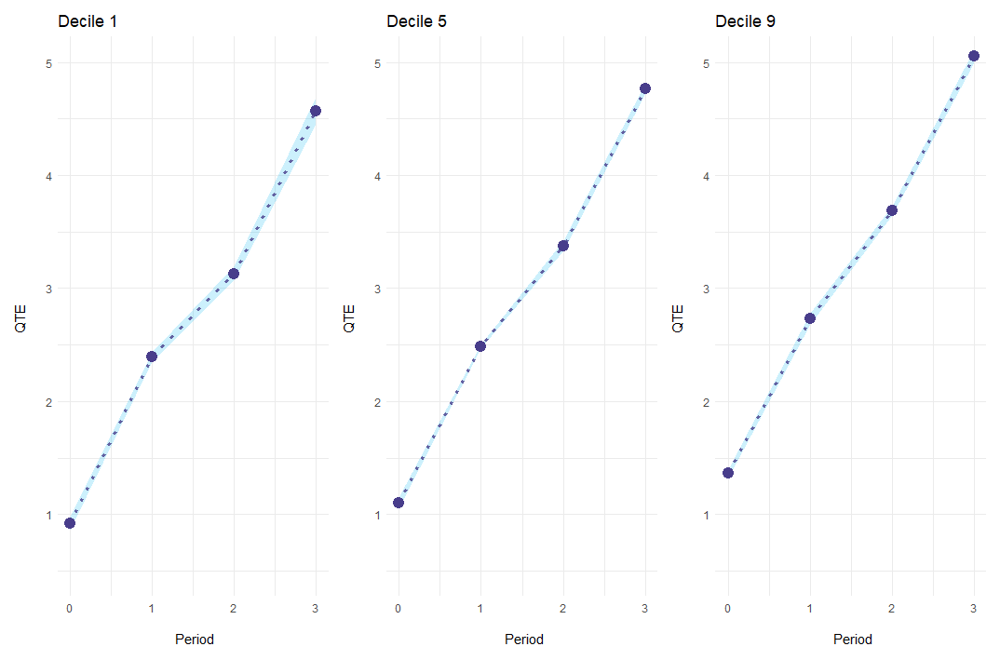

ecic estimates a changes-in-changes model with multiple periods and cohorts as suggested in Athey and Imbens (2006). Changes-in-changes is a generalization of the difference-in-differences approach, estimating a treatment effect for the entire distribution instead of averages.
Athey and Imbens (2006). show how to extend the model to multiple periods and cohorts, analogously to a Two-Way Fixed-Effects model for averages. This package implements this, calculating standard errors via bootstrap and plotting results, aggregated or in an event-study-style fashion.
Installation
You can install ecic from GitHub.
# install.packages("remotes")
remotes::install_github("frederickluser/ecic")Basic Example
Estimation
Let’s look at a short example how to use the package. First, load some simulated sample data.
library(ecic)
data(dat, package = "ecic")
head(dat)
#> countyreal first.treat year time_to_treat lemp
#> <int> <int> <int> <int> <dbl>
#> 3 1980 1980 0 2.21
#> 3 1980 1981 1 3.33
#> 3 1980 1982 2 3.67
#> 5 1980 1980 0 2.77
#> 5 1980 1981 1 3.88
#> 5 1980 1982 2 3.80Then, the function ecic estimates the changes-changes-model:
# Estimate the model
mod =
ecic(
yvar = lemp, # dependent variable
gvar = first.treat, # group indicator
tvar = year, # time indicator
ivar = countyreal, # unit ID
dat = dat, # dataset
boot = "weighted", # bootstrap proceduce ("no", "normal", or "weighted")
nReps = 10 # number of bootstrap runs
)modcontains for every bootstrap run a list of all 2-by-2 combinations ($name_runs) and the point-estimates. summary_ecic combines this and adds standard errors:
(mod_res = summary_ecic(mod) )
#> perc coefs se
#> 0.1 1.215531 0.02670761
#> 0.2 1.324130 0.02310521
#> 0.3 1.458270 0.02105119
#> 0.4 1.590848 0.02128534
#> 0.5 1.747296 0.02098057
#> 0.6 1.921818 0.02135982
#> 0.7 2.124138 0.01802972
#> 0.8 2.372483 0.01799869
#> 0.9 2.787395 0.02241811
Event-Study Example
The package also allows to report event-study-style results of the effect. To do so, simply add the es = T argument to the estimation and summary_ecic will report effects for every event period.
# Estimate the model
mod =
ecic(
yvar = lemp, # dependent variable
gvar = first.treat, # group indicator
tvar = year, # time indicator
ivar = countyreal, # unit ID
dat = dat, # dataset
es = T, # report an event study
boot = "weighted", # bootstrap proceduce ("no", "normal", or "weighted")
nReps = 10 # number of bootstrap runs
)
# report results for every event period
(mod_res = summary_ecic(mod) )
#> [[1]]
#> perc es coefs se
#> 0.1 0 0.9175263 0.02924326
#> 0.2 0 0.9675225 0.02508082
#> 0.3 0 0.9959150 0.02116782
#> 0.4 0 1.0388312 0.02373263
#> 0.5 0 1.0992322 0.02558309
#> 0.6 0 1.1496203 0.03078493
#> 0.7 0 1.2049797 0.03654320
#> 0.8 0 1.2519476 0.03291178
#> 0.9 0 1.3616626 0.01765538
#> [[2]]
#> perc es coefs se
#> 0.1 1 2.393816 0.022273736
#> 0.2 1 2.386941 0.020039276
#> 0.3 1 2.423415 0.017145110
#> 0.4 1 2.452259 0.017982620
#> 0.5 1 2.484616 0.009979006
#> 0.6 1 2.525388 0.012816760
#> 0.7 1 2.575615 0.015196499
#> 0.8 1 2.630959 0.019570320
#> 0.9 1 2.730742 0.024796025
#> [...]Plotting
Event-study results can be plotted for every period individually with the option es_type = "for_periods".
plot_ecic(
mod_res,
periods_plot = c(0, 2), # which periods you want to show
es_type = "for_periods", # plots by period
ylim = c(.5, 4) # same y-axis
)
Alternatively, es_type = "for_quantiles" generates one plot for every quantile of interest.
plot_ecic(
mod_res,
periods_plot = c(.1, .5, .9), # which quantiles you want to show
es_type = "for_quantiles", # plots by period
ylim = c(.5, 5) # same y-axis
)
Under the hood
Estimation
For every treated cohort, we observe the distribution of the potential outcome Y(1). In the case of two groups / cohorts and two periods, Athey and Imbens (2006). show how to construct the counterfactual Y(0). This extends to the case with multiple cohorts and periods, where every not-yet-treated cohort is a valid comparison group.
Since we cannot simply average Quantile Treatment Effects, we must first store the empirical CDF of Y(1) and Y(0) for every two-by-two case. Note that, therefore, we cannot estimate a quantile treatment effect for units treated in the first (no pre-treatment period) and last period (no comparison cohort) and have to skip small cohorts (default nMin = 40) as we need more observations to estimate quantile treatment effects compared to an average effect.